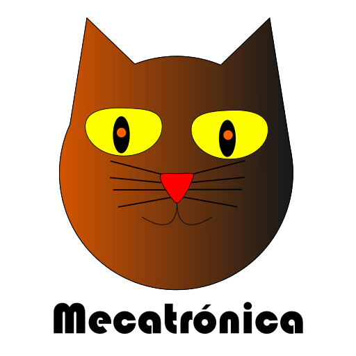

¿Qué es mecatrónica?
La ingeniería en mecatrónica es una multirama de la ingeniería, que se específica al diseño de sistemas mecánicos y eléctricos, con el uso de la programación, electrónica y la robótica.
La mecatrónica estudia el funcionamiento de distintas áreas, ya que incorpora la robótica, ciencias de la computación e ingeniería en electrónica.
¿Para qué se usa la mecatrónica?
El punto fuerte de la mecatrónica es la versatilidad crear productos, sistemas o proceso. Su principal objetivo es innovar productos, sistemas, procesos industriales, cubrir distintas necesidades como: Automatización de maquinaria: productividad y fiabilidad.
¿Cuáles son las especificaciones de la mecatrónica?
Su objeto de estudio se focaliza en proporcionar sistemas integrales, inteligentes, flexibles y funcionales que permitan crear productos versátiles, económicos, fiables, simples y en armonía con el ser humano y el medio ambiente.
La Ingeniería Mecatrónica incorpora los estudios, procedimientos y tecnologías que provienen de la ingeniería mecánica, electrónica, informática y eléctrica. Esta correlación da pie al análisis, diseño de productos y procesos de manufacturas automatizadas.
Avances mecatrónicos de los ultimos años
Con la tecnología avanzando a pasos cada vez más grandes nos estamos acercando rápidamente a un mundo que parece sacado de libros de ficción, y esto es gracias a muchas ciencias, una de ellas la Ingeniería Mecatrónica, que aportan de múltiples maneras sus beneficios y sus contribuciones a la innovación y al desarrollo de la sociedad.
Ejemplos:
- Drones: Estas máquinas tan curiosas que se han puesto de moda recientemente pueden parecer a simple vista juguetes, sin embargo, tienen un origen mucho más estratégico puesto que originalmente fueron creados como herramientas de guerra que serían utilizadas tanto para entregar mensajes, como para atacar soldados enemigos desde el aire sin poner en riesgo a ningún aliado.
- Robots:Los robots son posiblemente el más grande de todos los avances de la Mecatrónica y además, uno de los principales focos de estudio de esta carrera universitaria. Eso sí, no nos referimos únicamente a las máquinas con forma y comportamientos humanos, sino que hay mucho más detrás de esta invención.
- Maquinas ensambladoras: Las máquinas ensambladoras también forman parte de la lista de las aportaciones más importantes de la Ingeniería Mecatrónica para la humanidad. Esto se debe a que ayudan a aumentar la productividad de las fábricas, disminuir los costos de las producciones e incluso a mejorar la calidad de los artículos.
- Prótesis robóticas:Otro importante avance que surgió a partir de la Ingeniería Mecatrónica son las prótesis robóticas. Estos sistemas sirven para reemplazar extremidades del cuerpo de una persona que haya sufrido algún accidente.
- Impresoras 3d: Un invento que se encuentra en pleno auge en la actualidad son las impresoras 3D. Éstas pueden usarse para crear productos que de otra manera sería completamente imposible fabricar y que además del hecho de que pueden hacerse en casa, siempre y cuando se tengan los conocimientos sobre su uso y su cuidado, posibilitan la creación desde juguetes hasta órganos humanos funcionales.
- Casas inteligentes: En la búsqueda de mejorar nuestra calidad de vida y hacer nuestra rutina mucho más fácil, ya existen muchos prototipos de casas que están construidas desde sus estructuras con servicios y componentes móviles que tienen como objetivo mejorar la experiencia de aquellos que las habitan.